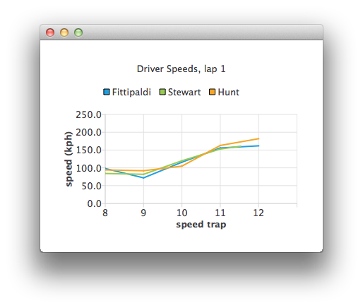

Using List Models as Data Sources in QML
Note: This is part of the Charts with QML Gallery example.

Let's define an empty ChartView first:
ChartView { id: chartView title: "Driver Speeds, lap 1" anchors.fill: parent legend.alignment: Qt.AlignTop animationOptions: ChartView.SeriesAnimations antialiasing: true }
Our ListModel uses hard-coded test data. In a real application the data source would be a timing system.
ListModel { // Hard-coded test data ListElement { speedTrap:0; driver: "Fittipaldi"; speed:104.12 } ListElement { speedTrap:0; driver:"Stewart"; speed:106.12 } ListElement { speedTrap:0; driver:"Hunt"; speed:106.12 } ... // An example ListModel containing F1 legend drivers' speeds at speed traps SpeedsList { id: speedsList Component.onCompleted: { timer.start(); } }
The data is parsed with a timer. The line series representing each driver are created on the fly.
// A timer to mimic refreshing the data dynamically Timer { id: timer interval: 700 repeat: true triggeredOnStart: true running: false onTriggered: { root.currentIndex++; if (root.currentIndex < speedsList.count) { // Check if there is a series for the data already // (we are using driver name to identify series) var lineSeries = chartView.series(speedsList.get(root.currentIndex).driver); if (!lineSeries) { lineSeries = chartView.createSeries(ChartView.SeriesTypeLine, speedsList.get(root.currentIndex).driver); chartView.axisY().min = 0; chartView.axisY().max = 250; chartView.axisY().tickCount = 6; chartView.axisY().titleText = "speed (kph)"; chartView.axisX().titleText = "speed trap"; chartView.axisX().labelFormat = "%.0f"; } lineSeries.append(speedsList.get(root.currentIndex).speedTrap, speedsList.get(root.currentIndex).speed); if (speedsList.get(root.currentIndex).speedTrap > 3) { chartView.axisX().max = Number(speedsList.get(root.currentIndex).speedTrap) + 1; chartView.axisX().min = chartView.axisX().max - 5; } else { chartView.axisX().max = 5; chartView.axisX().min = 0; } chartView.axisX().tickCount = chartView.axisX().max - chartView.axisX().min + 1; } else { // No more data, change x-axis range to show all the data timer.stop(); chartView.animationOptions = ChartView.AllAnimations; chartView.axisX().min = 0; chartView.axisX().max = speedsList.get(root.currentIndex - 1).speedTrap; } } }